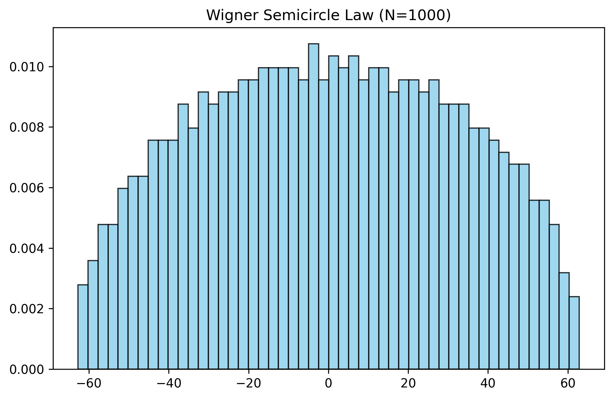
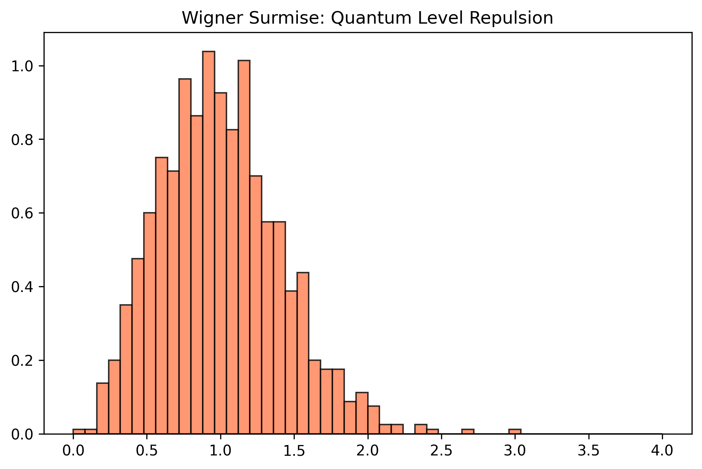
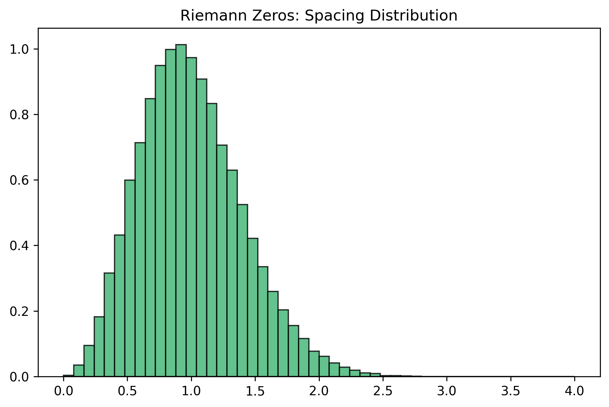

Theoretical Background Contexte Théorique
The ultimate goal of this project is to train a neural network to distinguish between quantum chaos (energy levels of heavy nuclei) and mathematical chaos (zeros of the Riemann Zeta function), and to use Explainable AI to interpret the model's decision boundaries.
In the 1970s, physicist Freeman Dyson and mathematician Hugh Montgomery made a discovery: the equations describing the energy levels of complex, heavy atoms perfectly matched the equations describing the distribution of prime numbers.
- The Physical Side (GUE): Heavy atoms are simulated using the Gaussian Unitary Ensemble (random matrices filled with complex noise).
- The Mathematical Side (Riemann): The non-trivial zeros of the Riemann Zeta function dictate the distribution of prime numbers.
The AI Challenge: If the statistics are theoretically identical, can a modern Deep Learning model find a hidden pattern to tell them apart?
Le but ultime de ce projet est d'entraîner un réseau de neurones à distinguer le chaos quantique (niveaux d'énergie des noyaux lourds) du chaos mathématique (zéros de la fonction Zêta de Riemann), et d'utiliser l'IA explicable (XAI) pour interpréter les décisions du modèle.
Dans les années 1970, le physicien Freeman Dyson et le mathématicien Hugh Montgomery ont fait une découverte majeure : les équations décrivant les niveaux d'énergie des atomes lourds correspondent parfaitement aux équations décrivant la distribution des nombres premiers.
- Côté Physique (GUE) : Les atomes lourds sont simulés via l'Ensemble Unitaire Gaussien (des matrices aléatoires remplies de bruit complexe).
- Côté Mathématique (Riemann) : Les zéros non triviaux de la fonction Zêta dictent la répartition des nombres premiers.
Le défi de l'IA : Si les statistiques sont théoriquement identiques, un modèle de Deep Learning moderne peut-il trouver un motif caché pour les différencier ?
Phase 1: Building the Physics Baseline Phase 1 : La base physique (Chaos Quantique)
We generate large random Hermitian matrices using complex Gaussian noise to simulate chaotic quantum systems. Extracting their eigenvalues yields the raw energy levels, forming the Wigner Semicircle Law.
To study local fluctuations, we apply a non-linear transformation (unfolding) to normalize the mean level spacing. The resulting distribution perfectly matches the Wigner Surmise, demonstrating "Quantum Level Repulsion" (energy levels refuse to overlap).
Nous générons de grandes matrices hermitiennes aléatoires pour simuler des systèmes quantiques chaotiques. L'extraction de leurs valeurs propres fournit les niveaux d'énergie bruts, formant la Loi du demi-cercle de Wigner.
Pour étudier les fluctuations locales, nous appliquons une transformation non linéaire (le "dépliage") pour normaliser l'espacement moyen. La distribution qui en résulte correspond parfaitement à la Conjecture de Wigner, démontrant la "Répulsion des niveaux quantiques" (les niveaux d'énergie refusent de se chevaucher).


Phase 2: The Mathematical Baseline (Riemann Zeta) Phase 2 : La base mathématique (Zêta de Riemann)
We utilize high-precision datasets containing the heights of the first 100,000 non-trivial zeros of the Riemann Zeta function. We unfold these zeros using the leading asymptotic term of the Riemann-von Mangoldt counting function:
$$x_i = \frac{\gamma_i}{2\pi} \left( \ln\left(\frac{\gamma_i}{2\pi}\right) - 1 \right)$$
When we plot the spacing between these unfolded zeros, we witness the exact same "Quantum Level Repulsion" as seen in the physics matrices.
Nous utilisons des jeux de données de haute précision contenant les hauteurs des 100 000 premiers zéros non triviaux de la fonction Zêta. Nous "déplions" ces zéros en utilisant le terme asymptotique principal de la formule de Riemann-von Mangoldt :
$$x_i = \frac{\gamma_i}{2\pi} \left( \ln\left(\frac{\gamma_i}{2\pi}\right) - 1 \right)$$
En traçant l'espacement entre ces zéros dépliés, nous observons exactement la même "Répulsion" que celle constatée dans les matrices de physique quantique.
